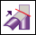
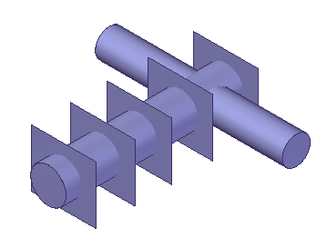
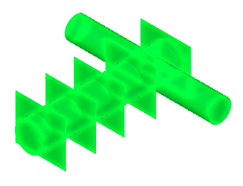
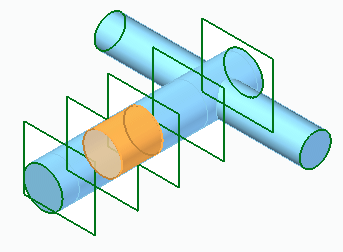
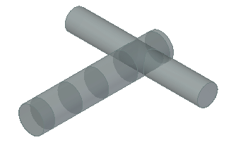

Create a solid body from intersecting surfaces
-
Choose Surfacing tab→Modify Surface group→Intersect

.
-
On the Intersect command bar, click the Intersect options list, and then click the Create design bodies option.
-
Select intersecting surfaces and/or solid bodies and then click Accept.

-
On the Volume Regions dialog box, review the list of regions found and determine which ones to convert to a solid body. To remove a region from the list, uncheck the box for that region. Only checked regions are converted to solid bodies. Use the Invert option to change checked regions to unchecked and unchecked regions to checked. Use the Unite Regions box to unite the regions into a single solid body. If unchecked, a single solid body is created from each region. All surfaces that participated in the creation of a region can be deleted by clicking the Consume Surfaces box.
Note:A region highlights as the cursor moves over it in the region list.

-
On the Volume Regions dialog box, click Close.
-
On the Intersect command bar, click Accept.

How do I
Intersect a surfaceLook up more details
Intersect command barVolume Regions dialog box